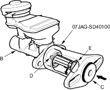
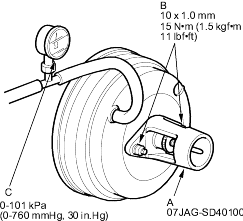
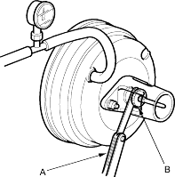
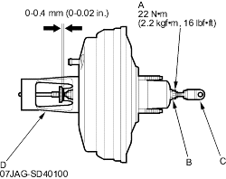

Pushrod adjustment gauge, 07JAG-SD40100
NOTE: Master cylinder pushrod-to-piston clearance must be checked and adjustments made, if necessary before installing the master cylinder.
- Set the special tool (A) on the master cylinder body (B), push in the centre shaft (C) until the top of it contacts the end of the secondary piston (D) by turning the adjusting nut (E).

- Without disturbing the centre shaft's position, install the special tool (A) backwards on the booster.

- Install the master cylinder nuts (B) and tighten to the specified torque.
- Connect the booster in-line with a vacuum gauge (C) 0 – 101 kPa (0 – 760 mmHg, 30 in.Hg) to the booster's engine vacuum supply, and maintain an engine speed that will deliver 66 kPa (500 mmHg, 20 in.Hg) vacuum.
- With a feeler gauge (A), measure the clearance between the gauge body and the adjusting nut (B) as shown.
If the clearance between the gauge body and adjusting nut is 0.4 mm (0.02 in.), the pushrod-to-piston clearance is 0 mm. However, if the clearance between the gauge body and adjusting nut is 0 mm, the pushrod-to-piston clearance is 0.4 mm (0.02 in.) or more. Therefore it must be adjusted and rechecked.
Clearance: 0 – 0.4 mm (0 – 0.02 in.)

- If the clearance is incorrect, loosen the star locknut (A) and turn the adjuster (B) in or out to adjust.
- Adjust the clearance while the specified vacuum is applied to the booster.
- Hold the clevis (C) while adjusting.

- Tighten the star locknut securely.
- Remove the special tool (D).